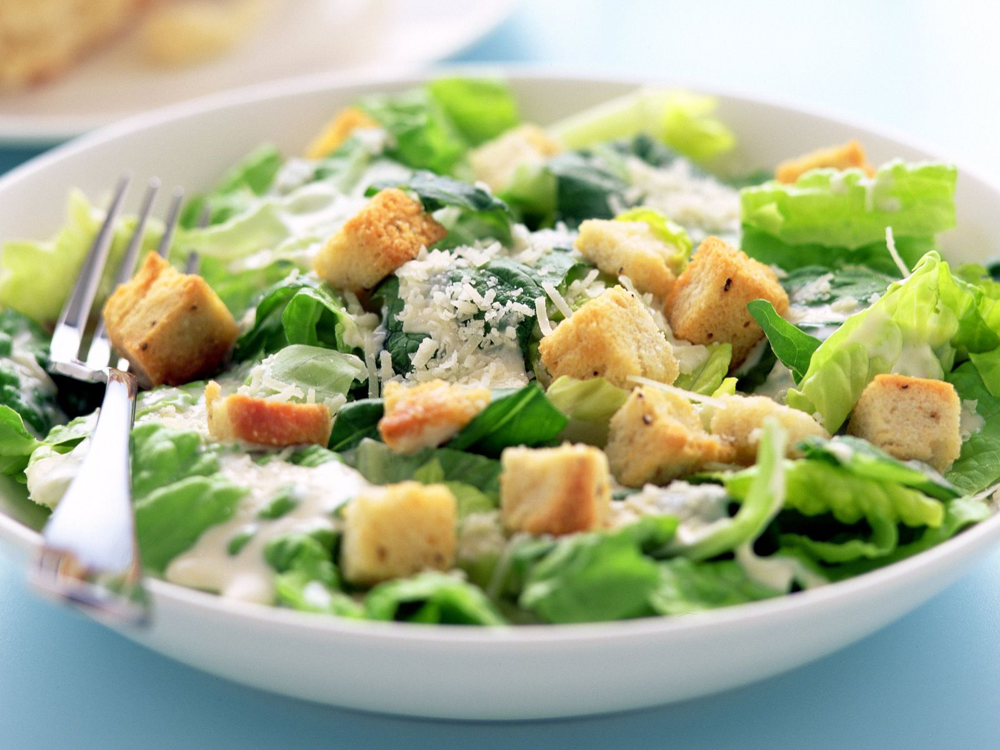

Caesar Salad:

Caesar Salad, finished
Description:
Caesar Salad is a light and very delicious dish, created in the 'Little Caesar Palace' in Las Vegas.
Ingredients:
- 1 large or 2 small heads of romaine lettuce
- Parmesan cheese, shredded or shaved
- Crisp croutons, homemade can be made several days ahead
- Caesar salad dressing - homemade is best
- 2 small garlic cloves, minced
- 2 tsp dijon mustard
- 2 tsp fresh lemon juice
Steps:
- In a small bowl, whisk together garlic, dijon, Worcestershire, lemon juice and red wine vinegar.
- Slowly drizzle in extra virgin olive oil while whisking constantly.
- Whisk in 1/2 tsp salt and 1/8 tsp black pepper, or season to taste.
- Rinse, dry and chop or tear the romaine into bite-sized pieces. Place in a large serving bowl and sprinkle generously with shredded parmesan cheese and cooled croutons. Drizzle with caesar dressing and toss gently until lettuce is evenly coated.